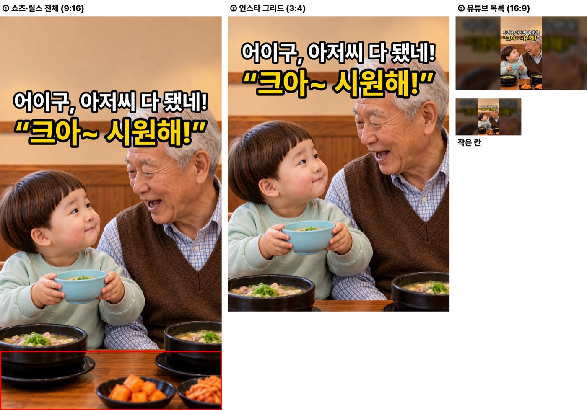
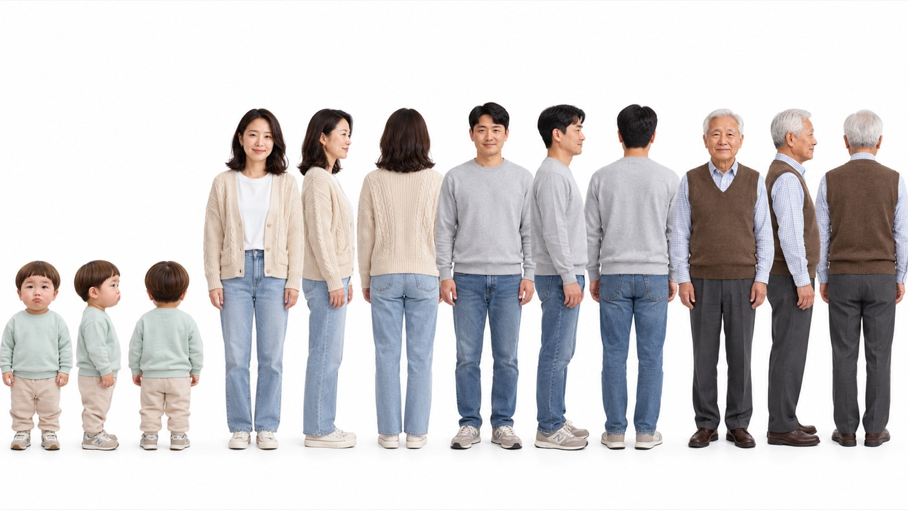
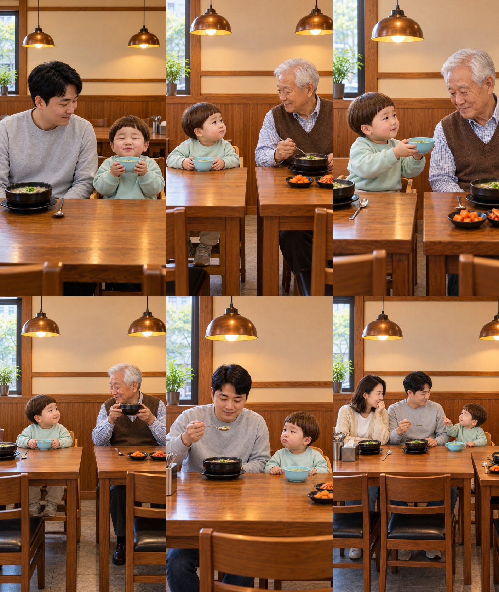
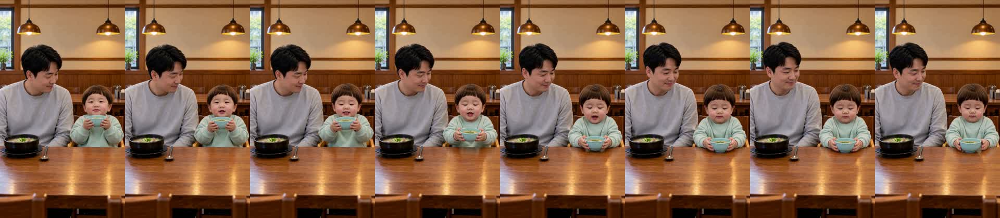
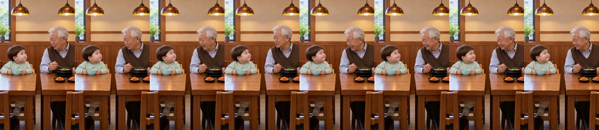
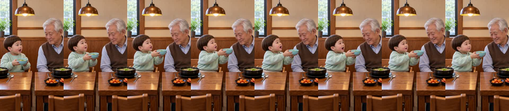
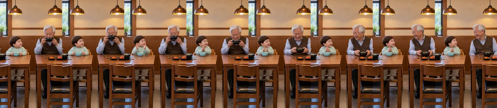
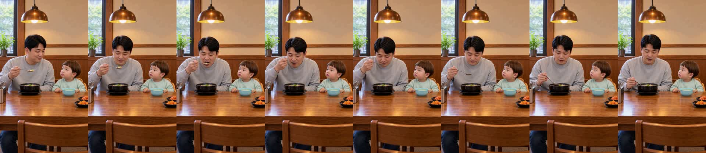
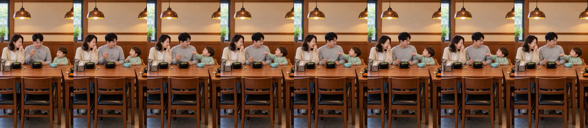

국밥집 «크아~ 시원해!» 확인
doyoon-gukbap-kra-001 · R3 · 16.4초 · 6컷 · D0~D8 통과 · 2026-10-29
봐 주셔야 할 것
- 첫 «크아~» — 받아쓰기에서 «아, 시원해»로 잡혔습니다. «크아»가 짧게 뭉개졌는지 들어 주세요(0~2초).
- 할아버지 «크아~»(4번) — 말이 아니라 숨소리+웃음으로 잡혔습니다. 완성본 받아쓰기에는 «크아»로 나옵니다.
- 아빠 «크아~»(5번) — 자막이 먼저 뜨고, 아빠가 국물을 마신 뒤 소리가 늦게 나옵니다.
- 끝 반응이 짧습니다 — «아빠도!» 뒤 소리가 없어 거기서 바로 끝납니다. 엄마가 입을 가리고 웃는 모습은 «아빠도!» 하는 동안 보입니다.
- 도윤이 첫 컷 음높이 326Hz — 경고선 330Hz 바로 아래입니다(3·6번은 372·390Hz).
썸네일
흰 줄 = 할아버지 대사, 노란 줄 = 도윤 대사. 결말 «아빠도!»는 숨겼습니다.

제작 중 고친 것
- 1번 컷이 두 번 빗나갔습니다(R1: 화면이 뒤로 빠짐 · R2: 다른 구도에 도윤이 두 명). 명세의 «입에서 그릇을 내리며»·«방금 다 마셔서»가 마시는 장면을 새로 짓게 해서, «턱 앞 그릇을 테이블에 내려놓는다»로 바꾼 R3에서 통과했습니다.
- H3 비용: 6컷 + 1번 재발주 2회 = 8회.
컷별 실측
| 컷 | 대사 | 받아쓰기 | 음높이 | 시작 그림 닮음 |
|---|---|---|---|---|
| 1 도윤 | 크아~ 시원해! | 가시원해 | 326Hz | 통과(R3) |
| 2 할아버지 | 어이구, 아저씨 다 됐네! | 어이구 아저씨 다 됐네 | 150Hz | 1.00 |
| 3 도윤 | 할부지도 크아! | 할부지도 크다! | 372Hz | 0.98 |
| 4 할아버지 | 크아~ | (소리) | 숨소리 | 0.99 |
| 5 아빠 | 크아~ | 크아 | 숨소리 | 0.99 |
| 6 도윤 | 아빠도! | 아빠도! | 390Hz | 1.00 |
완성본 받아쓰기: «아, 시원해. 아이고, 아저씨 다 됐네. 할부지도 크아. 크아. 크아. 아빠도.»
인물 시트 · 시작 그림


컷 프레임





